Works offlineNothing leaves your Mac
Stop googling “compress PDF”, “merge PDF”, “sign PDF” and the rest.
Drag a PDF and pause. It’s done in a second, right on your Mac. No internet needed.
- Favorites
- Desktop
- Documents
- Downloads
- Locations
- Macintosh HD
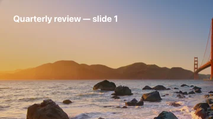

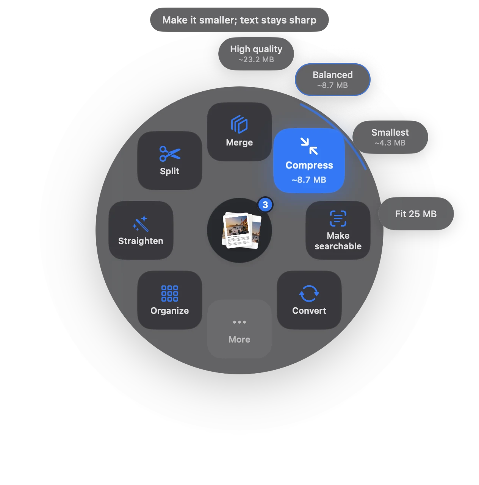
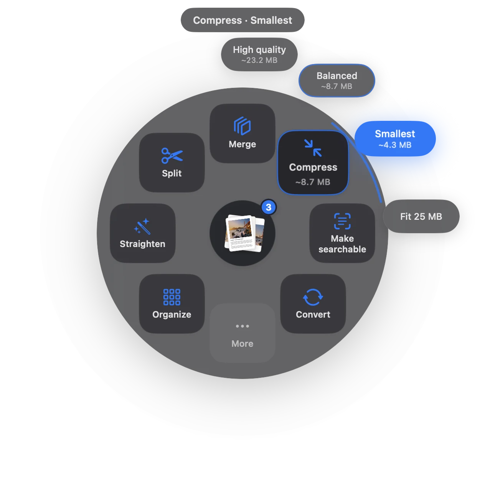
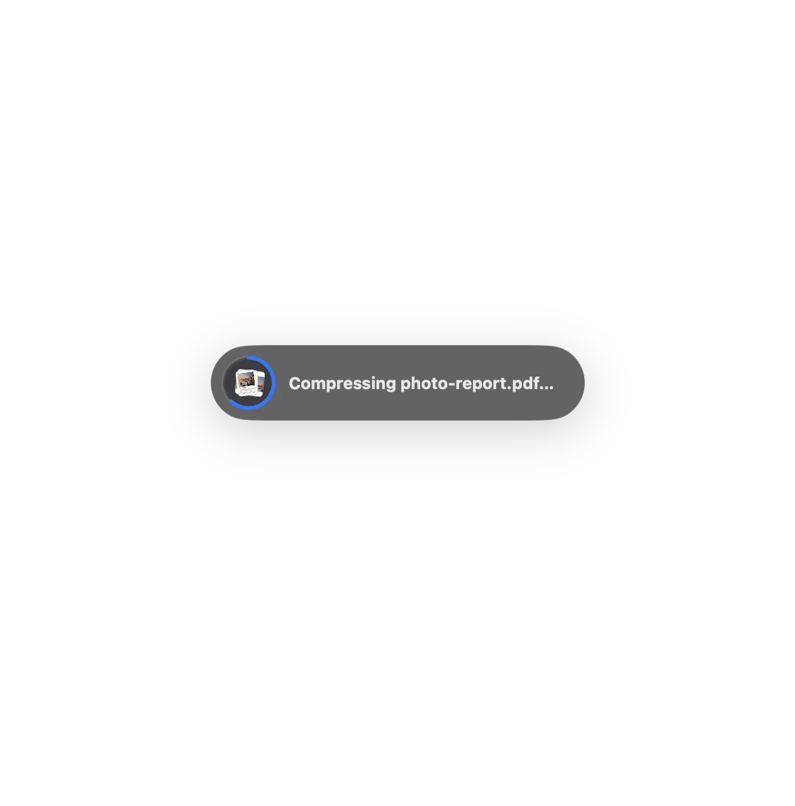
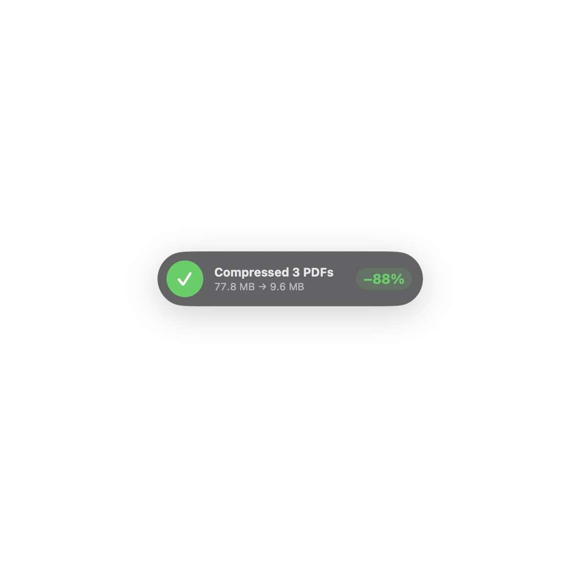
- 1Drag
Pick up any PDF, from Finder, Mail or your desktop.
- 2Pause
Slow down for a beat. The actions open around it.
- 3Drop
Let go on one. 77.8 MB becomes 9.6 MB, right there.
Choose what happensto your PDF.
Drop files on Sheaf, pick an action, and the result appears beside the original.
Site photos.pdf41.2
Contract scan.pdf28.4
Quarterly review.pdf8.2
77.8 MB
Text stays sharp and selectable.
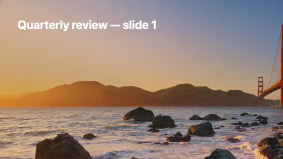
- Letter1
- Contract3
- Site photos9
- Quarterly review17
- First page
- Last page
- Every page
- Pages I choose
- Emails 2
- Phones 2
- ID numbers 1
- Addresses 1
- Bank accounts 2
- DOCXReport.docx
- MDNotes.md
- HTMLArticle.html
- RTFMinutes.rtf
- HEICIMG_2041.heic
- PDFReport.pdf
- PDFNotes.pdf
- PDFArticle.pdf
- PDFMinutes.pdf
- PDFIMG_2041.pdf
Signatures. OCR.Passwords. And more.
Split, straighten, protect, make searchable and automate, in the same circle.
Your files never leave your Mac.
Password added. Only people you tell can open it.
Made for Macsaround the world.
Sheaf speaks English, German, French, Spanish and Japanese. Its App Store page is in 16 languages.
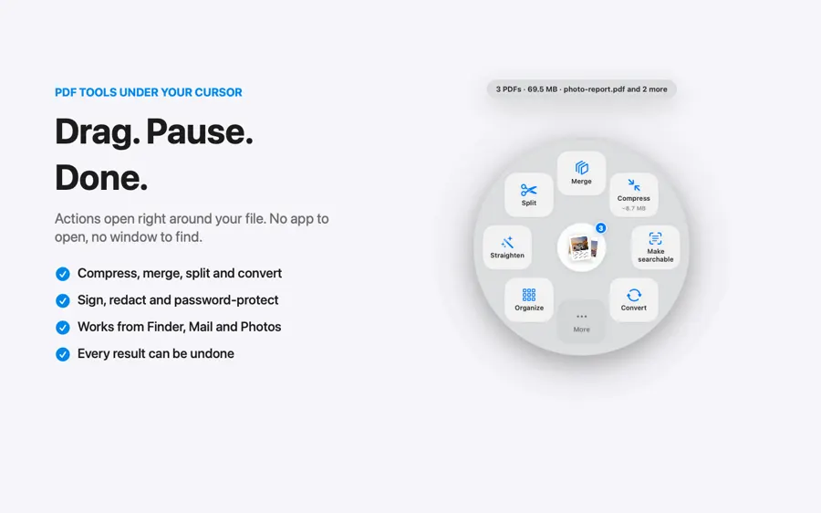
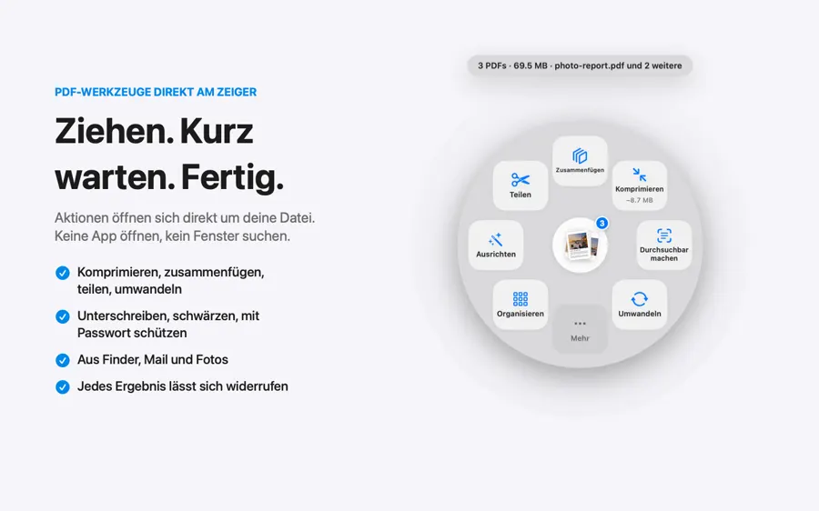
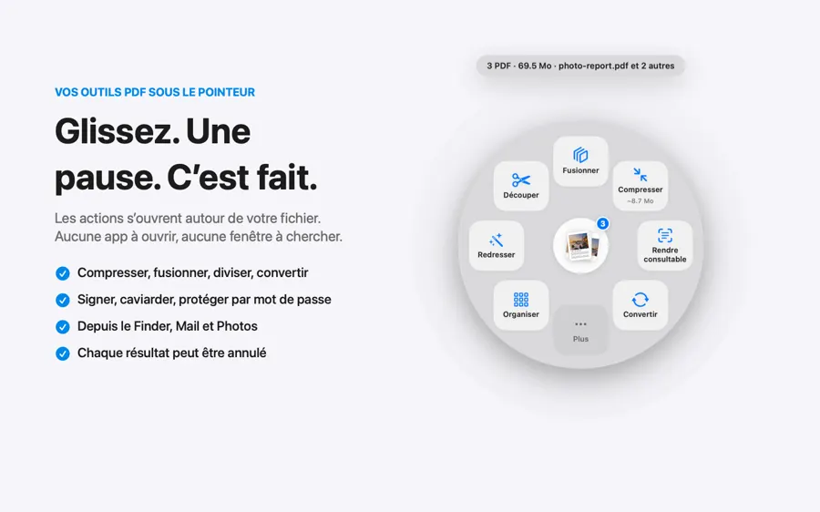
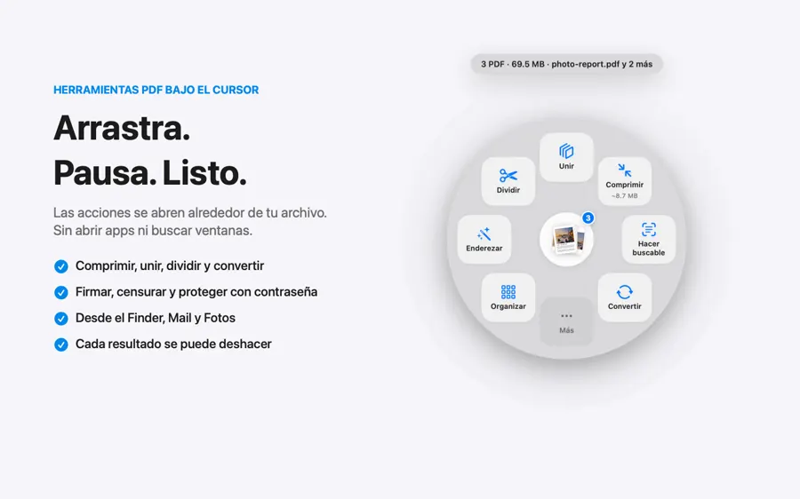
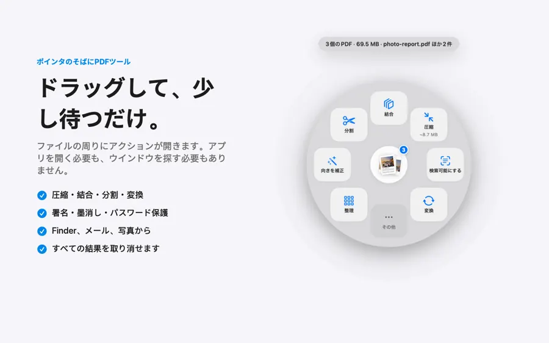
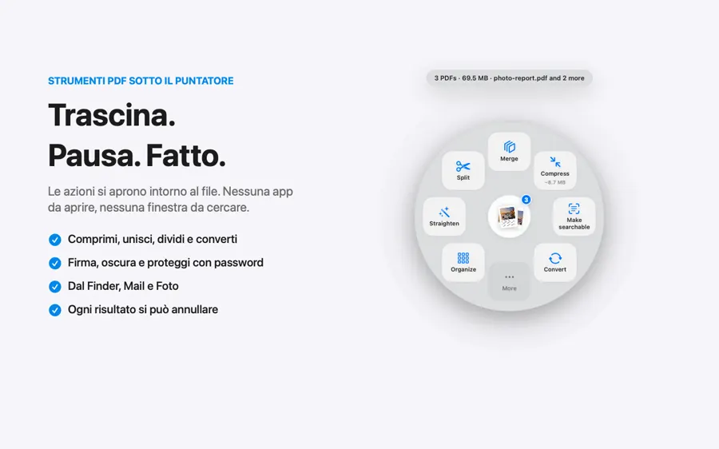
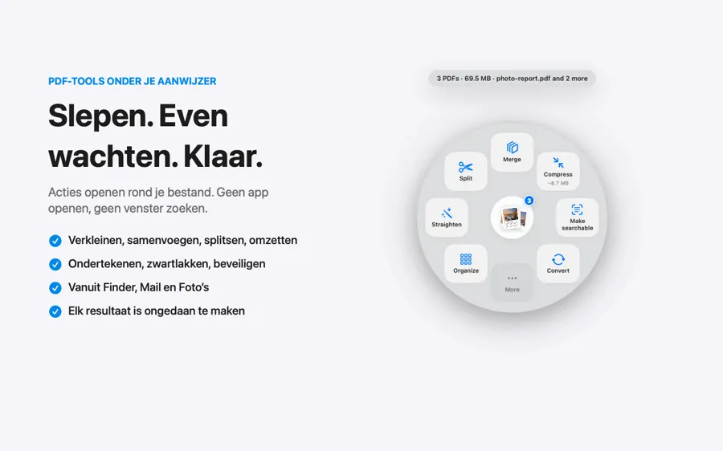
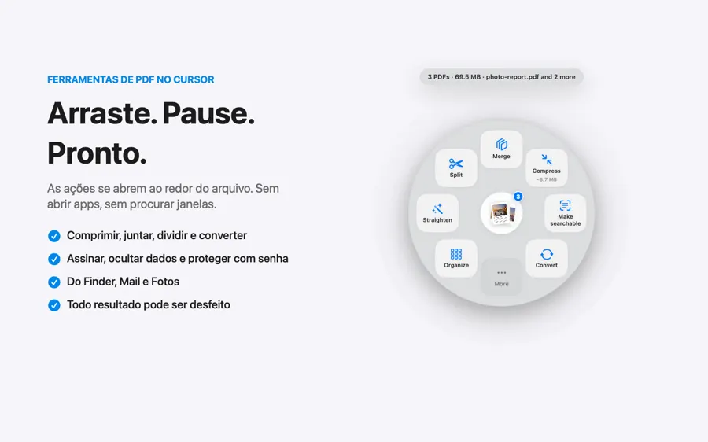
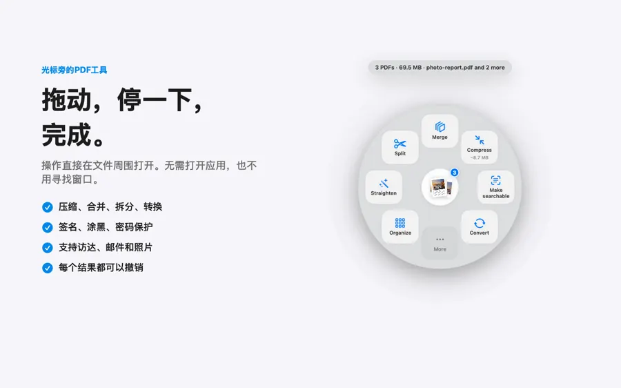
- Drag from FinderAny window, any screen
- Mail attachmentsStraight from the message
- PhotosDrag photos out, get a PDF
- Menu barChoose files, see recent results
- ⌃⌥S in FinderActs on the files you selected
Your Finder, one shortcut away.
Select files and press ⌃⌥S, or drag from Mail and Photos. Sheaf works with the apps you already use.
Why people leaveonline PDF sites.
The same 42.7 MB contract, compressed two ways.
Upload time for 42.7 MB at 10 Mbps, a common home upload speed. Both lanes are sped up 8×.
- Where your file goesUploaded to a company’s serverStays on your Mac
- Big filesOften capped or behind a paywallNo size limit
- No internetDoesn’t workWorks the same
- AccountOften needed after a few filesNever
- PriceOften a monthly subscriptionPay once, share with family
- Ads and trackingCommon on free sitesNone
Questions, answered.
A Mac app that puts PDF tools right where you drag. Start dragging a PDF, pause, and a circle of actions opens around your cursor: compress, merge, split, sign, redact, convert, make searchable and more.
No. Everything runs on your Mac, even offline. Sheaf has no account and no server that sees your files.
Download Sheaf free and start the 7-day trial to use everything, unlimited, without paying. After the trial you keep 3 free actions a day.
One purchase, no subscription. The launch price is $14.99 (US) until December 31, then $24.99. Prices vary by country. Family Sharing is included.
PDFs, Word, RTF, text, Markdown and web pages, plus images such as HEIC, PNG, WebP and JPEG.
Yes. Every result can be undone, and your original files are never changed.
Your PDFs, donein a second.
Everything free for 7 days. Then keep it with one purchase, launch price until December 31.
Download for Mac